Schéma → cours avec mots clés à placer → flash P1/P2/P3. Nerfs crâniens III–XII détaillés = hors programme.
P1
P2
P3
⭐ fréquence concours
1. Les 3 systèmes nerveux P3
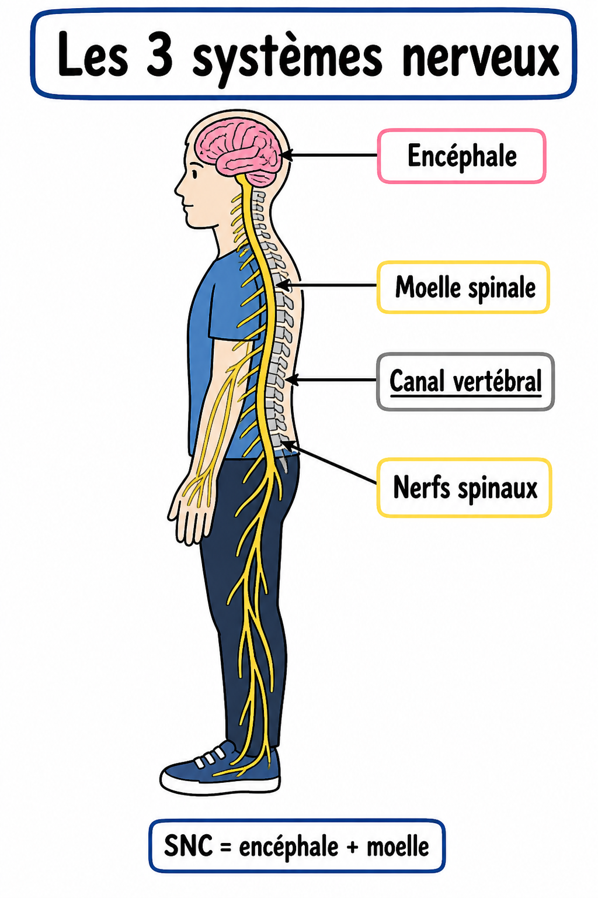
- SNC / névraxe = (hémisphères + tronc + cervelet) + .
- SNP = (depuis la moelle) + .
- I (olfactif) et II (optique) = du SNC ; III–XII naissent de noyaux du tronc (détail hors programme).
- Système : pas de commande volontaire ; mixte (centres SNC + voies périphériques).
nerfs crâniens
végétatif
encéphale
expansions
moelle spinale
nerfs spinaux
2. La moelle spinale P1
Souvent tombé Limites, grise/blanche, cornes, règle C8.
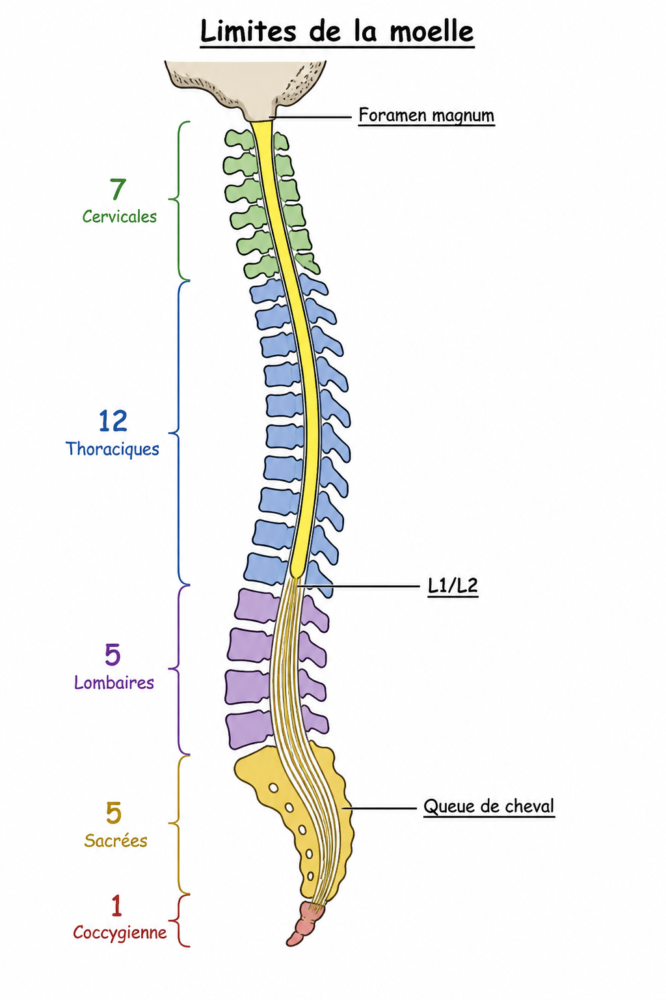
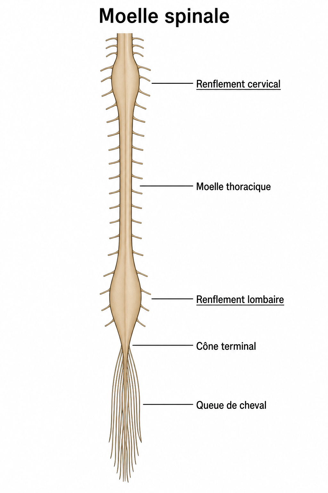
- Partie inférieure du névraxe, dans le canal vertébral ⭐.
- Substance grise ⭐ (cornes en papillon) · blanche ⭐ (cordons).
- Limite haute : bord inférieur du ⭐ · basse : ⭐⭐.
- Renflement ⭐ (membres sup.) · ⭐ (membres inf.) · cône → .
- Canal central ou épendymaire ⭐ : au milieu de la substance grise, quasi .
Attention / piège Moelle : grise centrale / blanche périphérique — inverse des hémisphères.
queue de cheval
périphérique
L1/L2
lombaire
centrale
foramen magnum
cervical
virtuel
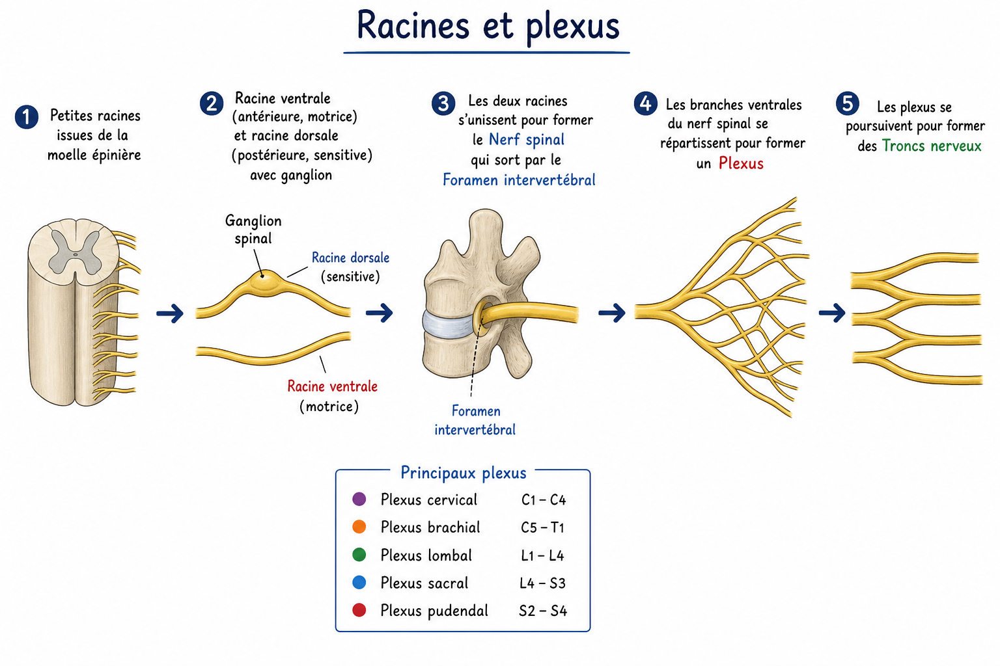
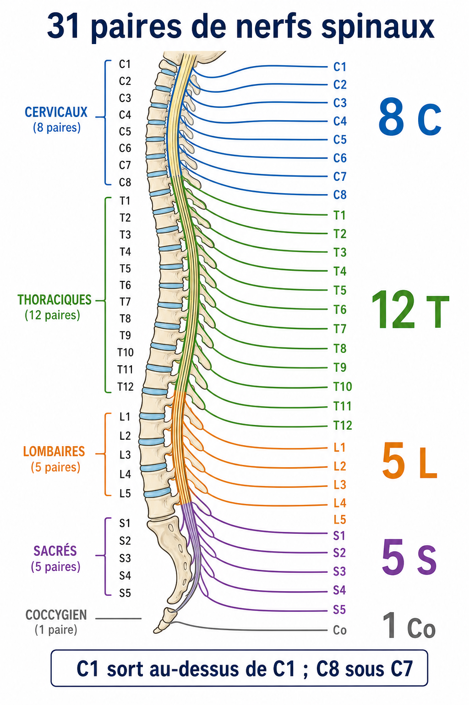
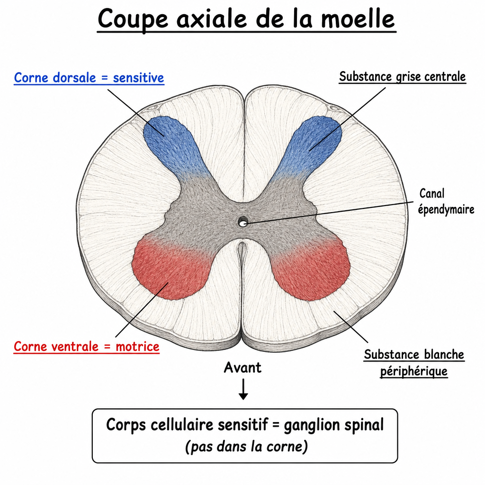
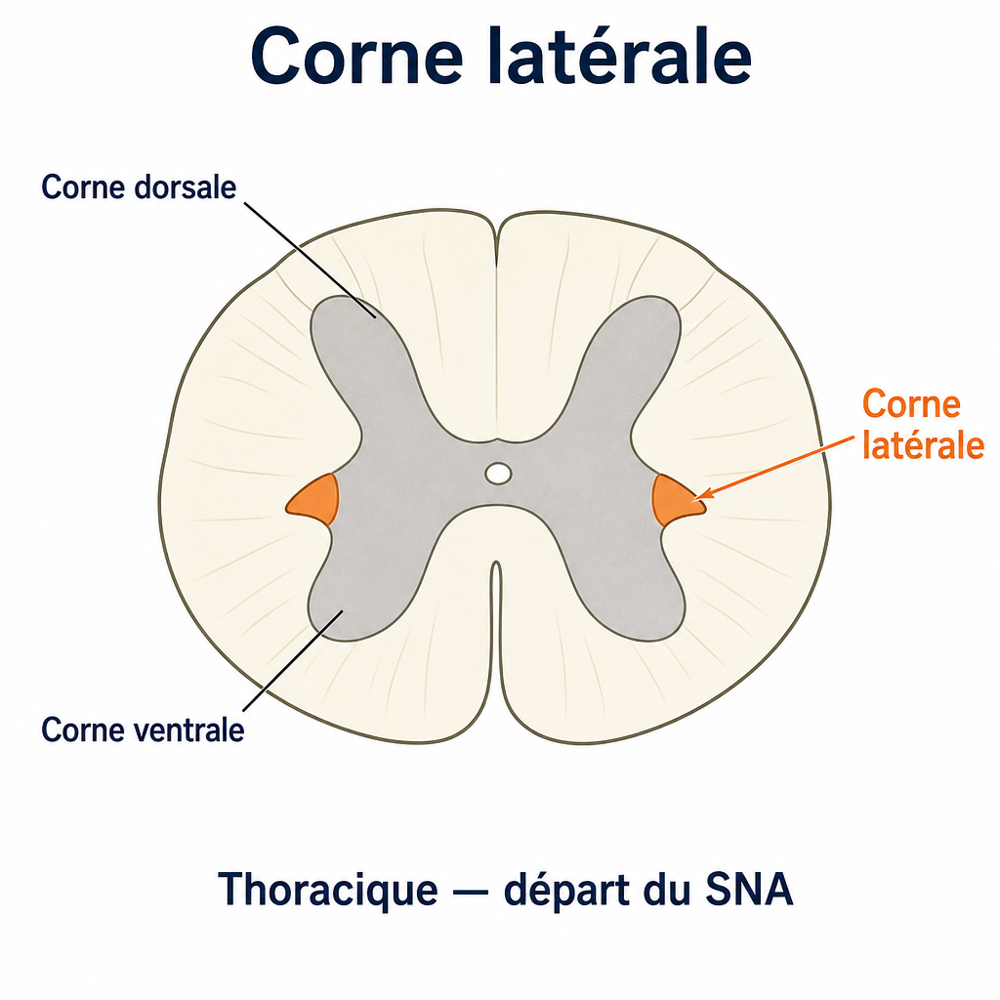
- 31 paires : cervicales, 12 thoraciques, 5 lombales, 5 sacrées, 1 coccygienne.
- Cervical : sortie de la vertèbre ; C8 sort ; ailleurs = en dessous.
- Corne ventrale = ⭐ · dorsale = ⭐ (1er neurone dans le ).
- Corne latérale (niveau ) = départ autonome.
Attention / piège 8 nerfs cervicaux pour 7 vertèbres — C8 sous C7.
sous C7
sensitive
8
thoracique
ganglion spinal
au-dessus
motrice
3. Le tronc cérébral P1
Souvent tombé 3 étages + pédoncules cérébelleux.
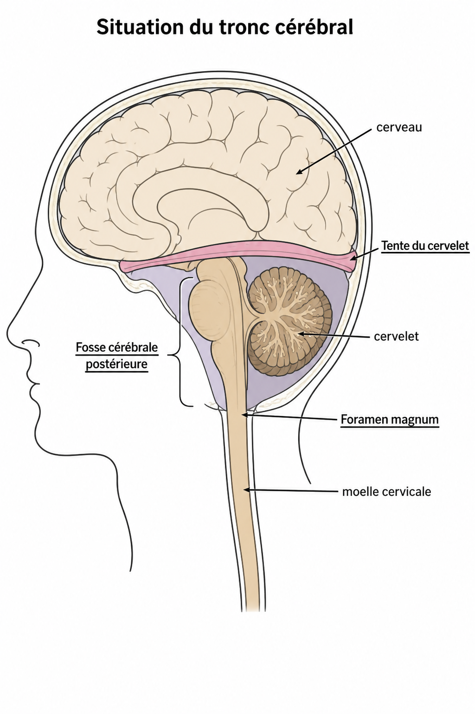
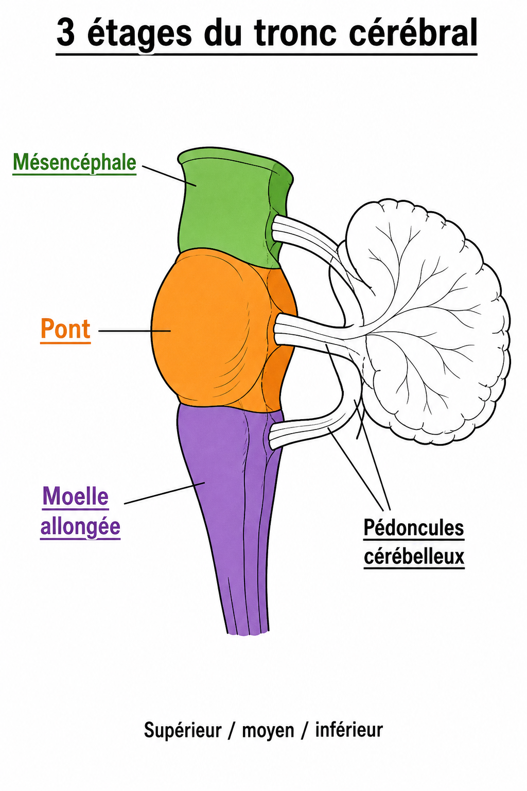
- Situé dans la ⭐ (infra-tentoriel), dans le prolongement de la moelle cervicale ⭐.
- 3 étages ⭐ haut → bas : ⭐⭐ · ⭐⭐ · ⭐⭐.
- Relié au cervelet par 3 paires de ⭐⭐.
- Contient la ⭐ (cycle éveil–sommeil).
pont
formation réticulée
mésencéphale
pédoncules cérébelleux
fosse cérébrale postérieure
moelle allongée
4. Le liquide cérébro-spinal P3
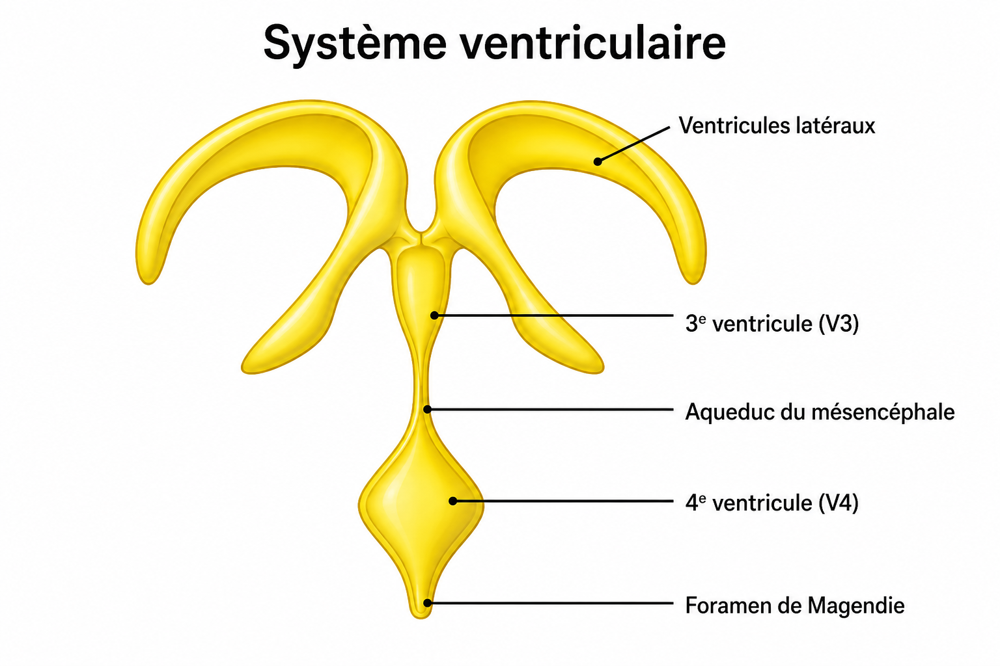
- Sécrétion par les · résorption par les .
- Circuit : 2 ventricules latéraux → foramens interventriculaires → → du mésencéphale → → foramen de → espace sub-arachnoïdien.
V4
granulations arachnoïdiennes
Magendie
plexus choroïdes
aqueduc
V3
5. Le cervelet P3
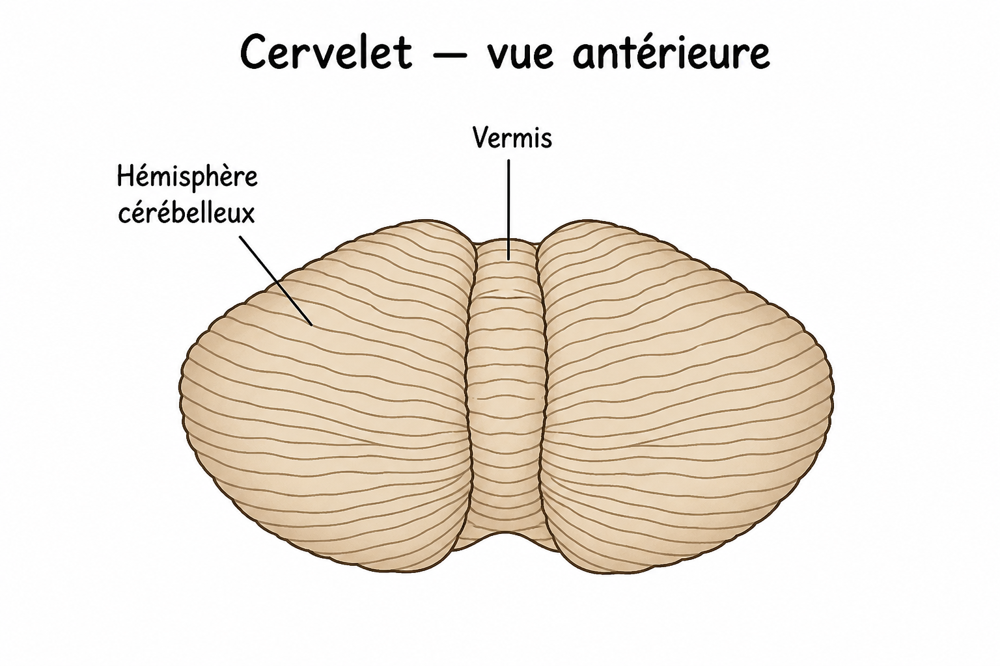
- Situé en arrière du ; ~50 % des neurones de l’encéphale.
- Rôles : contrôle du mouvement, posture, , , (+ cognitive / émotionnelle).
équilibre
tronc cérébral
oculomotricité
tonus
6. Le diencéphale P3

- Entre les hémisphères, au-dessus du tronc ; centré par le .
- : relai / filtration sensitive-motrice ⭐⭐⭐.
- : autonomie + hormones · épithalamus ( → ).
- : motricité extra-pyramidale.
mélatonine
thalamus
noyau sub-thalamique
V3
épiphyse
hypothalamus
7. Les méninges P1
Souvent tombé 3 feuillets + faux / tente.
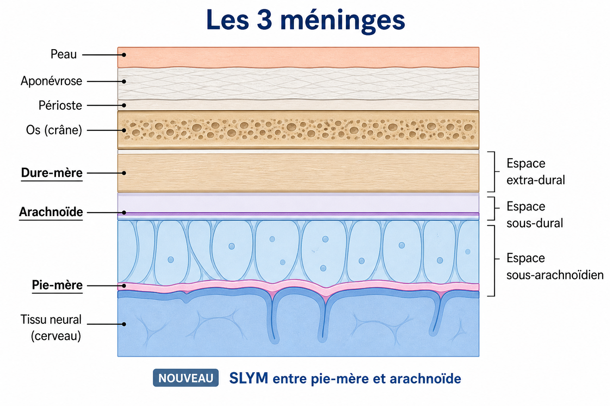
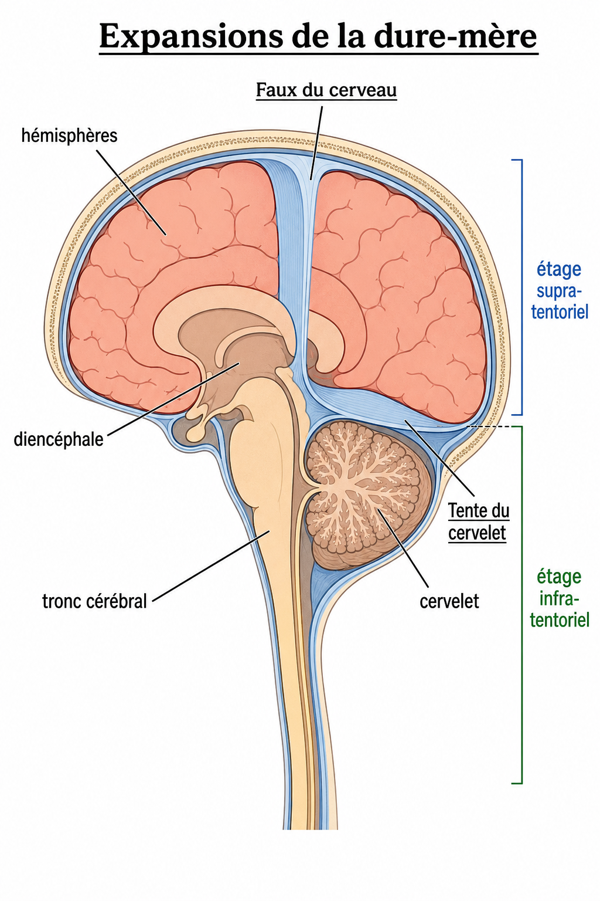
- Ext. → int. : ⭐ · ⭐ · ⭐.
- 🆕 : 4e feuillet entre pie-mère et arachnoïde.
- ⭐ sépare les hémisphères D/G · ⭐ sépare hémisphères / cervelet (supra- vs infra-tentoriel).
tente du cervelet
pie-mère
SLYM
arachnoïde
faux du cerveau
dure-mère
8. Les hémisphères cérébraux P1
Souvent tombé Section la plus dense — sillons ⭐⭐⭐, lenticulaire, thalamus.
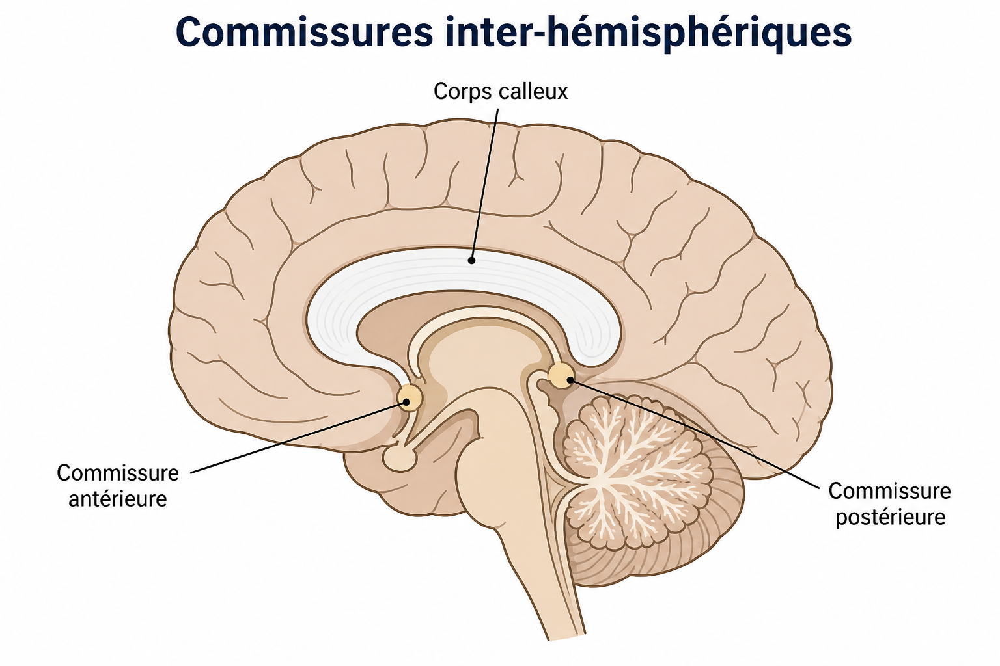
Config. / noyaux
- 2 hémisphères séparés par la fissure longitudinale · reliés notamment par le .
- Coupe frontale très tombée : ⭐⭐⭐ + ⭐⭐⭐.
- Lenticulaire = + .
thalamus
putamen
corps calleux
pallidum
noyau lenticulaire
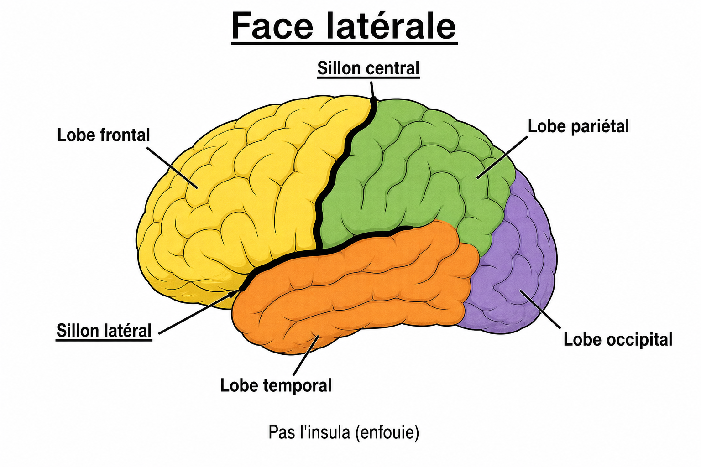


Trois faces
- Latérale : ⭐⭐ (frontal / pariétal) · non visible (enfouie).
- Médiale : ⭐⭐⭐ · ⭐⭐⭐.
- Inférieure : ⭐⭐ · ⭐⭐ → ⭐⭐ (pas de lobe pariétal).
sillon en H
sillon cingulaire
insula
pariéto-occipital
sillon olfactif
sillon central
gyrus orbitaire

Lobe frontal P1
- Motrice = · ⭐ porte (langage, hémisphère dominant).
- Face latérale (sup → inf) : ⭐ au-dessus du ⭐ · ⭐⭐ entre sillons frontaux · F3 en dessous.
- Sillon ⭐ : parallèle et en avant du sillon central. F1 visible aussi face médiale.
F1
sillon frontal supérieur
F2
sillon précentral
F3
gyrus précentral
Broca

Lobe pariétal P1
- Lobule pariétal inférieur : ⭐ (antérieur) + ⭐⭐ (postérieur).
- Latéral : ⭐ (parallèle en arrière du central, se continue face médiale ⭐) · ⭐ (sépare lobules pariétaux sup. / inf.).
- Médial : ⭐ (en arrière du lobule paracentral post.) · ⭐ (frontal médial) + ⭐ (pariétal médial).
supra-marginal
angulaire
sillon post-central
sillon intra-pariétal
pré-cunéus
gyrus cingulaire antérieur
gyrus cingulaire postérieur

Lobe temporal P1
- ⭐ = Heschl (audition, en arrière) + (langage, à gauche).
- ⭐ (mémoire, face médiale).
- Sillons latéraux : ⭐⭐, parallèles au sillon latéral (séparent T1 / T2 / T3).
T1
Wernicke
hippocampe
sillons temporaux sup./inf.

Lobe occipital P1
- Sillon (face interne) : cortex visuel · sépare O5 / O6.
- Sillon : prolongement de l’intra-pariétal · sépare et .
calcarin
intra-occipital
O1
O2
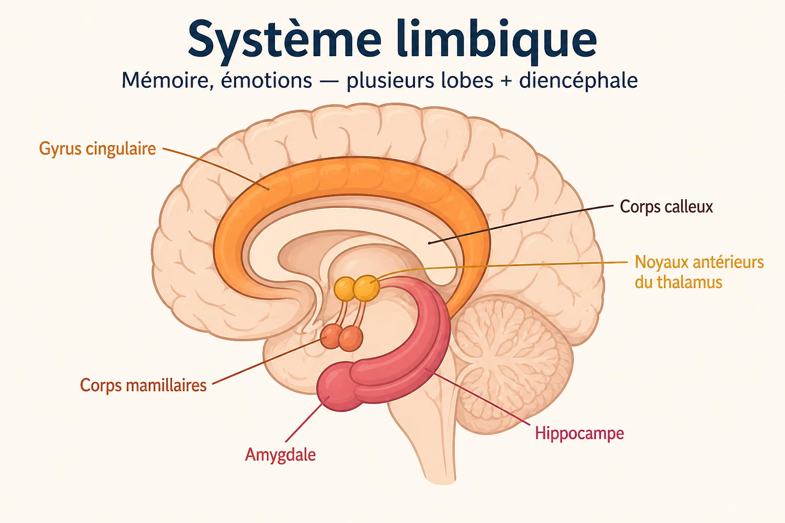
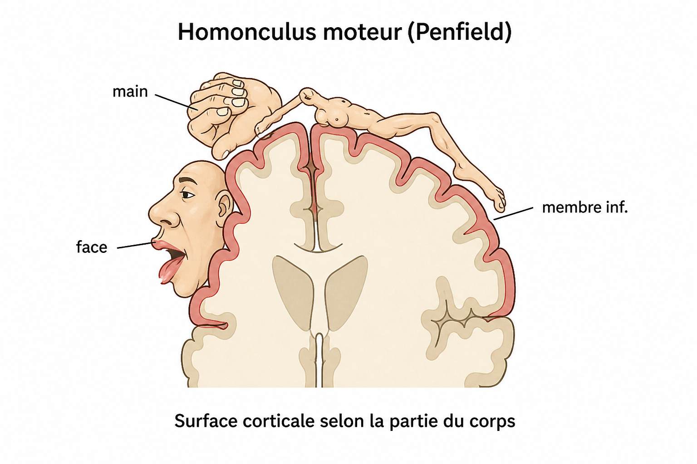
Limbique : multi-lobes (hippocampe, amygdale, cingulaire…). Homonculus de Penfield : somatotopie du gyrus précentral.
9. Système nerveux végétatif P3
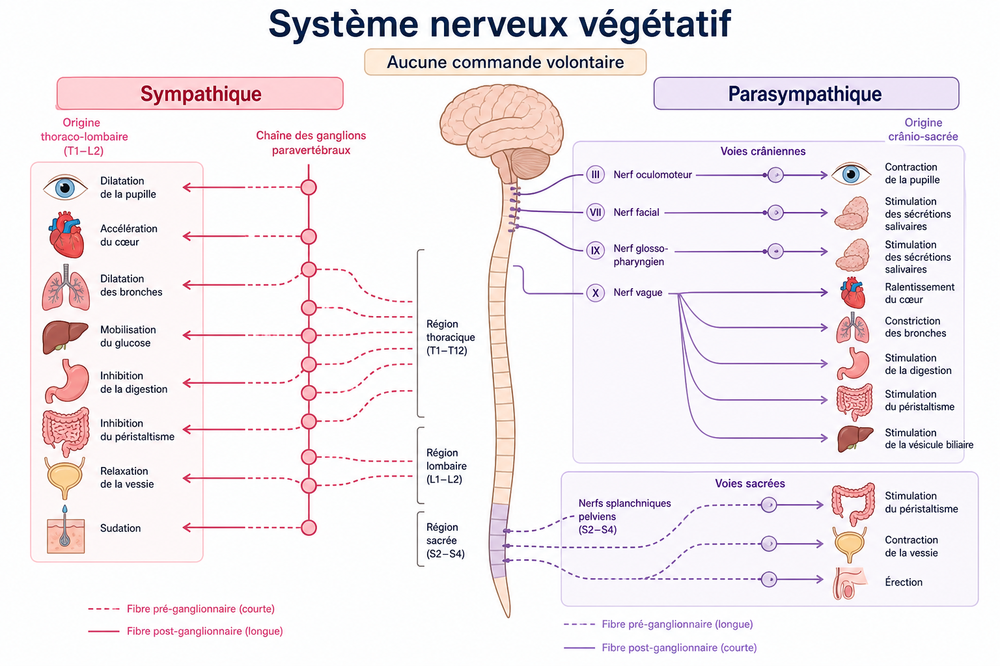
- Chaîne à 2 neurones (pré- / post-ganglionnaire). Régulateurs : formation réticulée, hypothalamus, cortex.
- (, éveil) : centres T1–L3, ganglions à distance → tachycardie, ↑PA, .
- () : tronc + moelle sacrée, ganglions près de l’organe → bradycardie, ↓PA, .
myosis
trophotrope
sympathique
mydriase
parasympathique
ergotrope
Flashcards — fin de fiche
Classées par priorité.
P1 — à maîtriser en priorité
Limite inférieure de la moelle ?
L1/L2 ⭐⭐.
Limite supérieure de la moelle ?
Bord inférieur du foramen magnum ⭐.
SG / SB dans la moelle ?
Grise centrale, blanche périphérique (inverse des hémisphères).
Corne ventrale / dorsale ?
Motrice / sensitive ; 1er neurone sensitif = ganglion spinal.
3 étages du tronc (haut → bas) ?
Mésencéphale, pont, moelle allongée ⭐⭐.
Lien tronc–cervelet ?
3 paires de pédoncules cérébelleux ⭐⭐.
3 méninges (ext. → int.) ?
Dure-mère, arachnoïde, pie-mère ⭐.
Faux vs tente ?
Faux = hémisphères D/G · tente = hémisphères / cervelet (supra/infra).
Coupe frontale : 2 structures ⭐⭐⭐ ?
Noyau lenticulaire + thalamus.
Sillons ⭐⭐⭐ face médiale ?
Cingulaire + pariéto-occipital.
Broca vs Wernicke ?
F3 frontal (dominant) vs T1 temporal gauche.
Insula visible sur une face ?
Non — enfouie dans le sillon latéral.
Règle de sortie des nerfs cervicaux ?
Au-dessus de la vertèbre ; C8 sous C7.
Canal central ou épendymaire ?
Au milieu de la substance grise de la moelle ; quasi virtuel ⭐.
Sillon précentral : visible sur quelle face ?
Face latérale ⭐ ; parallèle et en avant du sillon central.
Sillons frontaux supérieur et inférieur ?
Face latérale ⭐ ; horizontaux, partent du sillon précentral vers l'avant.
F1 = ?
Gyrus frontal supérieur ⭐ ; au-dessus du sillon frontal supérieur ⭐ ; visible aussi face médiale.
Sillon post-central ?
Parallèle en arrière du sillon central ⭐ ; se continue sur la face médiale ⭐.
Sillon intra-pariétal ?
Sépare lobule pariétal supérieur / inférieur ⭐ (sup-marginal + angulaire en bas).
Pré-cunéus : où ?
Face médiale, lobe pariétal, en arrière du lobule paracentral postérieur ⭐.
Gyrus cingulaire antérieur / postérieur ?
Ant. = frontal médial ⭐ ; post. = pariétal médial ⭐ — appartiennent au système limbique.
P2 — à bien connaître
Lenticulaire = ?
Putamen + pallidum.
Sillons face inférieure frontale ⭐⭐ ?
Olfactif + en H (délimite le gyrus orbitaire ⭐⭐).
F2 = ?
Gyrus frontal moyen ⭐⭐ ; entre les sillons frontaux supérieur et inférieur.
Gyrus orbitaire : où, délimité par ?
Face inférieure du lobe frontal ⭐⭐ ; délimité par le sillon en H.
Sillons temporaux sup./inf. : visible quelle face ?
Face latérale ⭐⭐ ; parallèles au sillon latéral, séparant T1, T2, T3.
Formation réticulée : rôle ?
Dans les 3 étages du tronc ; cycle éveil–sommeil.
Renflements de la moelle ?
Cervical (MS) + lombaire (MI).
P3 — lecture attentive
Circuit LCS (simplifié) ?
VL → V3 → aqueduc → V4 → Magendie → sub-arachnoïdien.
Sympathique vs para (pupille) ?
Mydriase vs myosis.
SLYM 🆕 ?
4ᵉ feuillet entre pie-mère et arachnoïde.
I–II vs III–XII ?
I–II = expansions du SNC ; III–XII = noyaux du tronc (SNP).
Modèle figé — dis « publie » pour le téléphone.